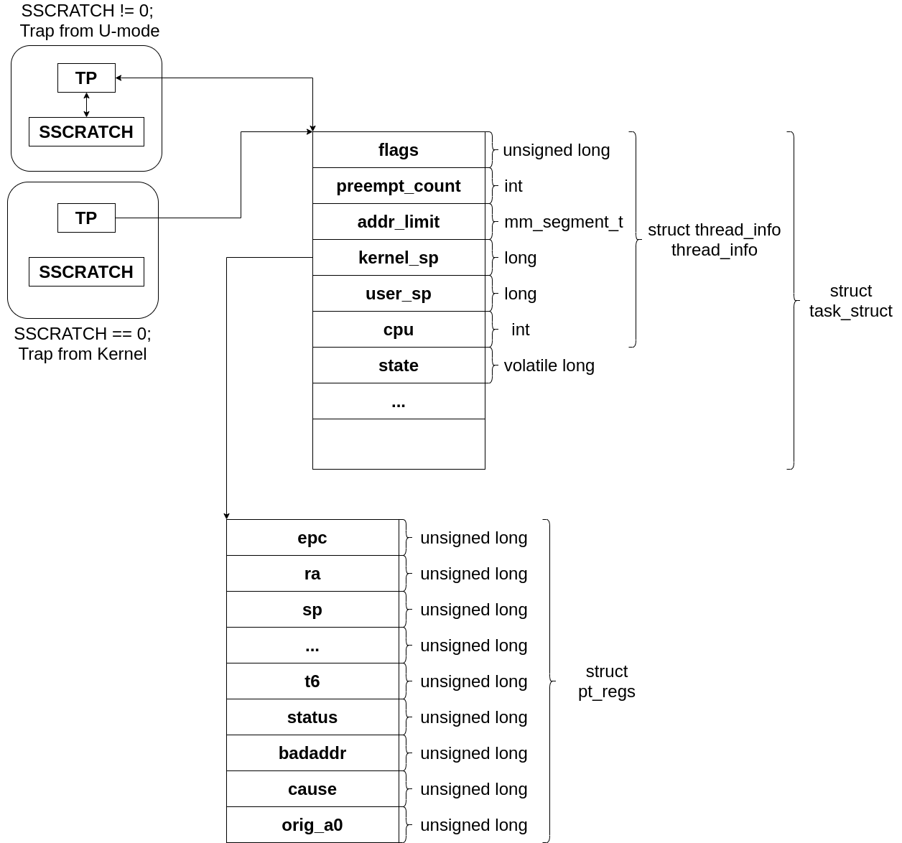

setup_vm、relocateを読み終えたので、次はstart_kernel実行までを読んでいく。
setup_trap_vector
arch/riscv/kernel/head.S
call setup_vm
#ifdef CONFIG_MMU
la a0, early_pg_dir
call relocate
#endif /* CONFIG_MMU */
call setup_trap_vector
/* Restore C environment */
la tp, init_task
sw zero, TASK_TI_CPU(tp)
la sp, init_thread_union + THREAD_SIZE
次に呼ばれる関数はsetup_trap_vectorである。
arch/riscv/kernel/head.S
.align 2
setup_trap_vector:
/* Set trap vector to exception handler */
la a0, handle_exception
csrw CSR_TVEC, a0
/*
* Set sup0 scratch register to 0, indicating to exception vector that
* we are presently executing in kernel.
*/
csrw CSR_SCRATCH, zero
ret
つまり、handle_exceptionのアドレスをstvecにダイレクトモードとしてセットする。
csrw CSR_SCRATCH, zeroのSSCRATCHの構造はよくわからないが、コメントによるとsup0が0であると、カーネルモードとするらしい。
handle_exceptionはどうなっているか見てみる。
かなり長い。
arch/riscv/kernel/entry.S
ENTRY(handle_exception)
/*
* If coming from userspace, preserve the user thread pointer and load
* the kernel thread pointer. If we came from the kernel, the scratch
* register will contain 0, and we should continue on the current TP.
*/
csrrw tp, CSR_SCRATCH, tp
bnez tp, _save_context
_restore_kernel_tpsp:
csrr tp, CSR_SCRATCH
REG_S sp, TASK_TI_KERNEL_SP(tp)
_save_context:
REG_S sp, TASK_TI_USER_SP(tp)
REG_L sp, TASK_TI_KERNEL_SP(tp)
addi sp, sp, -(PT_SIZE_ON_STACK)
REG_S x1, PT_RA(sp)
REG_S x3, PT_GP(sp)
REG_S x5, PT_T0(sp)
REG_S x6, PT_T1(sp)
REG_S x7, PT_T2(sp)
REG_S x8, PT_S0(sp)
REG_S x9, PT_S1(sp)
REG_S x10, PT_A0(sp)
REG_S x11, PT_A1(sp)
REG_S x12, PT_A2(sp)
REG_S x13, PT_A3(sp)
REG_S x14, PT_A4(sp)
REG_S x15, PT_A5(sp)
REG_S x16, PT_A6(sp)
REG_S x17, PT_A7(sp)
REG_S x18, PT_S2(sp)
REG_S x19, PT_S3(sp)
REG_S x20, PT_S4(sp)
REG_S x21, PT_S5(sp)
REG_S x22, PT_S6(sp)
REG_S x23, PT_S7(sp)
REG_S x24, PT_S8(sp)
REG_S x25, PT_S9(sp)
REG_S x26, PT_S10(sp)
REG_S x27, PT_S11(sp)
REG_S x28, PT_T3(sp)
REG_S x29, PT_T4(sp)
REG_S x30, PT_T5(sp)
REG_S x31, PT_T6(sp)
/*
* Disable user-mode memory access as it should only be set in the
* actual user copy routines.
*
* Disable the FPU to detect illegal usage of floating point in kernel
* space.
*/
li t0, SR_SUM | SR_FS
REG_L s0, TASK_TI_USER_SP(tp)
csrrc s1, CSR_STATUS, t0
csrr s2, CSR_EPC
csrr s3, CSR_TVAL
csrr s4, CSR_CAUSE
csrr s5, CSR_SCRATCH
REG_S s0, PT_SP(sp)
REG_S s1, PT_STATUS(sp)
REG_S s2, PT_EPC(sp)
REG_S s3, PT_BADADDR(sp)
REG_S s4, PT_CAUSE(sp)
REG_S s5, PT_TP(sp)
/*
* Set the scratch register to 0, so that if a recursive exception
* occurs, the exception vector knows it came from the kernel
*/
csrw CSR_SCRATCH, x0
カーネルモードからのトラップの場合は、SSCRATCHは0を示す。
また、tpはカーネルモードのThread pointerとなる。(_restore_kernel_tpsp)
一方、ユーザーモードからのトラップの場合は、SSCRATCHはカーネルモードのThread Pointerを示す。
また、tpの値はユーザーモードが使用している。
tpにカーネルモードのThread Pointerをセットしたら、次にレジスタを保存する。
まず、ユーザーモードのspを保存し、カーネルモードのspをロードする。
次に、スタックを必要分確保し、汎用レジスタを保存する(sp、tp以外)。
pt_regs構造体として保存する。
アセンブリ中ではオフセットはPT_で表される。
arch/riscv/include/asm/ptrace.h
struct pt_regs {
unsigned long epc;
unsigned long ra;
unsigned long sp;
unsigned long gp;
unsigned long tp;
unsigned long t0;
unsigned long t1;
unsigned long t2;
unsigned long s0;
unsigned long s1;
unsigned long a0;
unsigned long a1;
unsigned long a2;
unsigned long a3;
unsigned long a4;
unsigned long a5;
unsigned long a6;
unsigned long a7;
unsigned long s2;
unsigned long s3;
unsigned long s4;
unsigned long s5;
unsigned long s6;
unsigned long s7;
unsigned long s8;
unsigned long s9;
unsigned long s10;
unsigned long s11;
unsigned long t3;
unsigned long t4;
unsigned long t5;
unsigned long t6;
/* Supervisor/Machine CSRs */
unsigned long status;
unsigned long badaddr;
unsigned long cause;
/* a0 value before the syscall */
unsigned long orig_a0;
};
また、TASK_TIで表される構造体は(struct thread_info)であり、task_struct構造体に組み込まれている。
かなり長いので、最初の方だけ。
ちなみに、Linuxのプロセスはtask_structにて表現される。
また、カーネルレベルのスレッドの実装にも使われる。
include/linux/sched.h
struct task_struct {
#ifdef CONFIG_THREAD_INFO_IN_TASK
/*
* For reasons of header soup (see current_thread_info()), this
* must be the first element of task_struct.
*/
struct thread_info thread_info;
#endif
/* -1 unrunnable, 0 runnable, >0 stopped: */
volatile long state;
/*
* This begins the randomizable portion of task_struct. Only
* scheduling-critical items should be added above here.
*/
randomized_struct_fields_start
void *stack;
refcount_t usage;
/* Per task flags (PF_*), defined further below: */
unsigned int flags;
unsigned int ptrace;
thread_info構造体はarch/riscv/include/asm/thread_info.hにある。
arch/riscv/include/asm/thread_info.h
/*
* low level task data that entry.S needs immediate access to
* - this struct should fit entirely inside of one cache line
* - if the members of this struct changes, the assembly constants
* in asm-offsets.c must be updated accordingly
* - thread_info is included in task_struct at an offset of 0. This means that
* tp points to both thread_info and task_struct.
*/
struct thread_info {
unsigned long flags; /* low level flags */
int preempt_count; /* 0=>preemptible, <0=>BUG */
mm_segment_t addr_limit;
/*
* These stack pointers are overwritten on every system call or
* exception. SP is also saved to the stack it can be recovered when
* overwritten.
*/
long kernel_sp; /* Kernel stack pointer */
long user_sp; /* User stack pointer */
int cpu;
};
メモリの構造を以下に示す。 
まず、User modeのspをtask_struct.thread_info.user_spに保存し、
spにtask_struct.thread_info.kernel_spを入れ、ユーザーモードのスタックからカーネルのスタックに切り替える。
kernel_spはstruct pt_regsを保持するメモリ領域のポインタとなっている。
pt_regsへsp、tpを覗いた汎用レジスタすべて保存する。
次に、t0にsstatus.SUM、sstatus.FSビットを1にする。
ユーザーモードのスタックポインタをs0へ、
s1にsstatusを読み出し、同時にt0レジスタでsstatusをクリアする。
この段階で、Supervisor ModeでUビットのたった、ページにアクセスするとフォルトする。また、FPUは使用できない。
s2にsepc、s3にstval、s4にscause、s5にsscratchを読み込み、次に、pt_regs構造体の所定の位置に保存する。
最後に、sscratchにzeroをセットする。
これにて、再帰的なカーネルモードののトラップに対応できる。
次は、グローバルポインタ(global pointer)のロードから読んでいく。